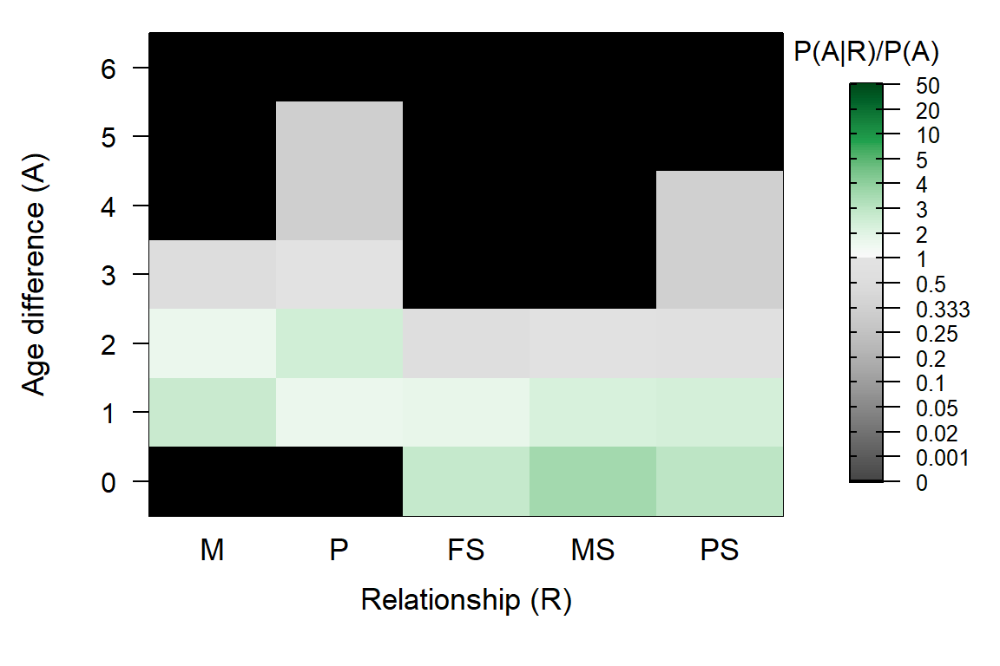

5 Pedigree-based ageprior
5.1 Discrete generations
When a pedigree is provided as input, MakeAgePrior() always checks whether generations are non-overlapping, i.e. whether all parents have the same the same age (typically 1), and all siblings have an age difference of 0. If these conditions are met, and there are at least 20 pairs each of mother-offspring, father-offspring, maternal half/full siblings, and paternal half/full siblings, it is concluded that generations are discrete. This auto-detection can be turned off by explicitly declaring Discrete=TRUE or Discrete=FALSE. If Discrete=TRUE is declared, a check is still performed, and any violations result in an error. When discrete generations are automatically inferred or explicitly declared, small-sample corrections Smooth and Flatten are always set to FALSE.
When Discrete = TRUE is specified prior to parentage assignment, being full siblings is no longer considered as a potential relationship alternative for candidate parents (age difference of 1), but being an aunt/uncle is (Figure 5.1). When the genetic information is ambiguous (few SNPs and/or high genotyping error rate) this may increase the assignment rate, but it may also increase the number of incorrect assignments.
Similarly, during full pedigree reconstruction, pairs with an age difference of 0 are considered potentially full siblings, half siblings, cousins (not shown in ageprior plot), or unrelated. In contrast, with overlapping generations they are (typically) also considered as potential full avuncular pairs, which are often difficult to distinguish from half-sibling pairs.2
# running sequoia to also get the extra ageprior columns:
Seq_HSg5 <- sequoia(SimGeno_example, LH_HSg5, Module="par",
args.AP=list(Discrete = TRUE),
CalcLLR=FALSE, Plot=FALSE, quiet=TRUE)
PlotAgePrior(Seq_HSg5$AgePriorExtra) Figure 5.1: Discrete generations
5.1.1 Generation interval different from 1
When generations do not overlap, it is often most straightforward to use generation number instead of birth year, such that parents and offspring are born 1 time unit apart. This is assumed to be the case when Discrete=TRUE is specified, but can be altered via MaxAgeParent (which in this situation is the only allowed age for parents). For example, pink salmon have a strict two-year life-cycle with odd-year and even-year populations:
MakeAgePrior(Discrete = TRUE, MaxAgeParent = 2, Plot=FALSE)## Ageprior: Flat 0/1, discrete generations, MaxAgeParent = 2,2## M P FS MS PS
## 0 0 0 1 1 1
## 1 0 0 0 0 0
## 2 1 1 0 0 0
## 3 0 0 0 0 05.2 Overlapping generations
Estimation of the agepriors from a pedigree and birth years normally requires little to no user input, but it can be useful to understand what goes on ‘under the hood’ in case you wish to customise the ageprior, when things go wrong, or just out of curiosity.
The process is here illustrated using an imaginary population of griffins, were each year exactly 20 baby griffins hatch. From 2001 to 2010, all juveniles are sampled, and parents assigned.
tail(Ped_griffin) # the pedigree## id dam sire birthyear
## 195 i195_2010_M i157_2008_F i163_2009_M 2010
## 196 i196_2010_M i148_2008_F i127_2007_M 2010
## 197 i197_2010_F i170_2009_F i127_2007_M 2010
## 198 i198_2010_M i166_2009_F i178_2009_M 2010
## 199 i199_2010_F i165_2009_F i141_2008_M 2010
## 200 i200_2010_F i166_2009_F i142_2008_M 2010We can calculate the ageprior matrix, and also return all the intermediate steps by specifying Return='all' (we come back to Smooth and Flatten later):
AP.griffin <- MakeAgePrior(Ped_griffin, Smooth=FALSE, Flatten=FALSE,
Return="all") ## Ageprior: Pedigree-based, overlapping generations, MaxAgeParent = 3,3
Figure 5.2: Ageprior for overlapping generations (griffin example)
names(AP.griffin)## [1] "BirthYearRange" "MaxAgeParent" "tblA.R" "PA.R"
## [5] "LR.RU.A.raw" "Weights" "LR.RU.A" "Specs.AP"The order of elements in the output list is also the order in which they are calculated inside MakeAgePrior().
5.2.1 BirthYearRange
BirthYearRange is the minimum and maximum birth year in LifeHistData (or in the birthyear column in the pedigree). This determines the maximum age difference between pairs of (sampled) individuals.
AP.griffin$BirthYearRange## [1] 2001 20105.2.2 MaxAgeParent
The maximum age of female and male parents, MaxAgeParent, is initially set equal to the maximum age difference between any kind of pairs (diff(BirthYearRange)) \(+1\) (see Default Ageprior), when not explicitly specified as input. If the pedigree includes at least 20 mother-offspring and/or father-offspring pairs with known age difference, the maximum parental age for that sex is updated to the maximum of the user-specified and pedigree-calculated values.
AP.griffin$MaxAgeParent## M P
## 3 3For example, if you know that males can live and breed to age 5, but you have only sampled males up to age 3, you can and should adjust the age prior – this will namely also affect the maximum age difference between paternal siblings during the full pedigree reconstruction. This adjustment works via Flatten.
# Specify maximum age for fathers, but estimate max mother age from pedigree
APX <- MakeAgePrior(Ped_griffin, Smooth=FALSE, MaxAgeParent = c(NA, 5))## Ageprior: Pedigree-based, overlapping generations, flattened, MaxAgeParent = 3,5
5.2.3 Counts: tblA.R
The list element tblA.R contains the raw counts of each age difference \(A\) per relationship \(R\):
AP.griffin[["tblA.R"]]## M P FS MS PS X
## 0 0 0 3 89 59 1900
## 1 105 58 2 103 86 3600
## 2 54 83 0 24 15 3200
## 3 8 22 0 0 0 2800
## 4 0 0 0 0 0 2400
## 5 0 0 0 0 0 2000
## 6 0 0 0 0 0 1600
## 7 0 0 0 0 0 1200
## 8 0 0 0 0 0 800
## 9 0 0 0 0 0 400
## 10 0 0 0 0 0 0
## 11 0 0 0 0 0 0For this table, the relationship between each pair of individuals according to the pedigree is obtained with GetRelM(), and a matrix with the age differences between all pairs is calculated using outer():
AgeDifM <- outer(Ped_griffin$birthyear, Ped_griffin$birthyear, "-")
# closest relationship for each pair:
RelM <- GetRelM(Ped_griffin, patmat=TRUE, GenBack=1)
table(c(AgeDifM), c(RelM)) # vectorising first speeds up table() a lot##
## FS M MHS O P PHS S U
## -9 0 0 0 0 0 0 0 400
## -8 0 0 0 0 0 0 0 800
## -7 0 0 0 0 0 0 0 1200
## -6 0 0 0 0 0 0 0 1600
## -5 0 0 0 0 0 0 0 2000
## -4 0 0 0 0 0 0 0 2400
## -3 0 0 0 30 0 0 0 2770
## -2 0 0 24 137 0 15 0 3024
## -1 2 0 101 163 0 83 0 3251
## 0 6 0 172 0 0 112 200 3510
## 1 2 105 101 0 58 83 0 3251
## 2 0 54 24 0 83 15 0 3024
## 3 0 8 0 0 22 0 0 2770
## 4 0 0 0 0 0 0 0 2400
## 5 0 0 0 0 0 0 0 2000
## 6 0 0 0 0 0 0 0 1600
## 7 0 0 0 0 0 0 0 1200
## 8 0 0 0 0 0 0 0 800
## 9 0 0 0 0 0 0 0 400Some ‘polishing’ of this table is required, as each pair of individuals is included twice:
# - 'MaxT' ensures sufficient, constant number of rows across intermediary tables
MaxAgeParent <- c(NA, NA)
MaxAgePO <- ifelse(!is.na(MaxAgeParent), MaxAgeParent, diff(AP.griffin$BirthYearRange)+1) # in actual code with thorough input checks
MaxT <- max(MaxAgePO+1, diff(AP.griffin$BirthYearRange))
# - factor() ensures levels with 0 count are included
# - drop negative age differences: all pairs are included 2x
tblA.R <- table(factor(AgeDifM, levels = 0:MaxT),
factor(RelM, levels = c("M", "P", "FS", "MHS", "PHS")))And a further improvement by using every relationship for each pair, rather than only their closest relationship (a pair may e.g. be both mother-offspring & paternal half-siblings):
RelA <- GetRelM(Ped_griffin, patmat=TRUE, GenBack=1, Return="Array")
tblA.R <- sapply(c("M", "P", "FS", "MHS", "PHS"),
function(r) table(factor(AgeDifM[RelA[,,r]==1],
levels = 0:MaxT)))
head(tblA.R)## M P FS MHS PHS
## 0 0 0 6 172 112
## 1 105 58 2 101 84
## 2 54 83 0 24 15
## 3 8 22 0 0 0
## 4 0 0 0 0 0
## 5 0 0 0 0 0The ageprior is for ‘maternal siblings,’ which includes both maternal half-siblings and full siblings, and similarly for paternal siblings. Lastly, a column with the total count of pairs per age difference is added (i.e. the denominator in the calculation of \(\alpha_{A,R}\). For this reference age-difference distribution all individuals in the pedigree with known birth year in LifeHistData are used.
tblA.R <- cbind(tblA.R,
"MS" = tblA.R[,"MHS"] + tblA.R[,"FS"],
"PS" = tblA.R[,"PHS"] + tblA.R[,"FS"])
tblA.R <- tblA.R[, c("M", "P", "FS", "MS", "PS")] # drop MHS & PHS columns
# add column for age diff. across all relationships (except 'Self' pairs)
tblA.R <- cbind(tblA.R,
"X" = table(factor(AgeDifM[c(RelM)!="S"], levels = 0:MaxT)))
# All pairs are included 2x in AgeDifM/RelM/RelA, to fix this:
# - drop the negative age differences (done with factor() above)
# - divide counts for row A=0 by 2 (including 'X' column)
tblA.R["0", ] <- tblA.R["0", ] / 2
# check that this is really the output from MakeAgePrior():
all(tblA.R == AP.griffin[["tblA.R"]])## [1] TRUE5.2.4 P(A|R): PA.R
The probability of age difference \(A\) conditional on relationship \(R\) is estimated as the proportion of pairs with relationship \(R\) and known age difference, that have age difference \(A\).
NAK.R <- colSums(tblA.R, na.rm=TRUE) # total count per relationship
NAK.R## M P FS MS PS X
## 167 163 5 216 160 19900PA.R <- sweep(tblA.R, 2, STATS=NAK.R, FUN="/")
head(round(PA.R, 2))## M P FS MS PS X
## 0 0.00 0.00 0.6 0.41 0.37 0.10
## 1 0.63 0.36 0.4 0.48 0.54 0.18
## 2 0.32 0.51 0.0 0.11 0.09 0.16
## 3 0.05 0.13 0.0 0.00 0.00 0.14
## 4 0.00 0.00 0.0 0.00 0.00 0.12
## 5 0.00 0.00 0.0 0.00 0.00 0.10Pairs where one or both individuals have an unknown age difference, are excluded from both the numerator and the denominator. It is assumed that the age difference distribution of these pairs of relatives follows the same distribution as for relatives for which the age difference is known (Section Unsampled individuals).
5.2.5 Full sibling correction
Sometimes full sibling pairs are rare, causing an imprecise estimate of their age-difference distribution. A reasonable assumption is that the distribution for full siblings is broadly similar to “happens to be both maternal and paternal sibling.”3 If many half-sibling pairs have been sampled, their age distribution is used to improve the estimate of \(P(A|FS)\) (this is not optional):
MinPairs.AgeKnown <- 20 # not user-setable.
# Use the product of the distributions if there are many MS & PS,
# and the average across the two distributions if there are a medium number:
if (NAK.R["FS"] / min(NAK.R[c("MS", "PS")]) < 0.5 &
all(NAK.R[c("MS", "PS")] > MinPairs.AgeKnown)) {
if (all(NAK.R[c("MS", "PS")] > 5*MinPairs.AgeKnown)) {
FS.tmp <- PA.R[,"MS"] * PA.R[,"PS"]
FS.tmp <- FS.tmp/sum(FS.tmp)
} else {
FS.tmp <- apply(PA.R[, c("MS", "PS")], 1, mean)
}
PA.R[,"FS"] <- (PA.R[,"FS"] + FS.tmp)/2
}
round(PA.R[1:5, ], 2) # note change in 'FS' column## M P FS MS PS X
## 0 0.00 0.00 0.48 0.41 0.37 0.10
## 1 0.63 0.36 0.51 0.48 0.54 0.18
## 2 0.32 0.51 0.01 0.11 0.09 0.16
## 3 0.05 0.13 0.00 0.00 0.00 0.14
## 4 0.00 0.00 0.00 0.00 0.00 0.125.2.6 Ageprior P(A|R)/P(A): LR.RU.A.raw
The age-difference based probability ratio \(\alpha_{A,R}\) is calculated by dividing \(P(A|R)\) (each relationship column) by \(P(A)\) (the X column):
LR.RU.A <- sweep(PA.R[, 1:5], 1, STATS=PA.R[,"X"], FUN="/")
head(round(LR.RU.A, 2))## M P FS MS PS
## 0 0.00 0.00 5.04 4.32 3.86
## 1 3.48 1.97 2.80 2.64 2.97
## 2 2.01 3.17 0.08 0.69 0.58
## 3 0.34 0.96 0.00 0.00 0.00
## 4 0.00 0.00 0.00 0.00 0.00
## 5 0.00 0.00 0.00 0.00 0.00# check that this is identical to output from MakeAgePrior():
LR.RU.A[!is.finite(LR.RU.A)] <- 0
all(abs(LR.RU.A - AP.griffin[["LR.RU.A.raw"]]) < 0.001) # allow for rounding errors## [1] TRUEThis is the non-flattened, non-smoothed ageprior, stored in list element [["LR.RU.A.raw"]]. Since in this example Smooth=FALSE and Flatten=FALSE, it is identical to list element [["LR.RU.A"]], which is the default output (Return='LR').
Both individuals need to have already at least one parent assigned to be able to genetically distinguish between half-siblings, full avuncular, and grandparent–grand-offspring↩︎
This is not necessarily the case. For example, in species that produce multiple offspring each year, and breed for multiple years, within-year (within-clutch) siblings are more likely to be full siblings than between-year siblings↩︎